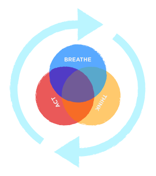

Based in one of the core skills in diving: when faced with a problem, just Stop. Breathe. Think. Breathe. Act.
Small business owners have enough to do just to keep their heads above water. BTA provides a partnership to determine your needs and then assists in the implementation of the solution. Simple as that.
Breathing is easy. Running a business...not so much. Finding the solution to any problem requires taking a step back and just breathing. What I provide is an outside perspective and the fundamentals to getting you back on track.
Rarely do things run as smoothly as imagined. I encourage and guide my clients to be proactive instead of reactive. The solution, generally, will present itself. I am here to ensure you find it.
Implementing a solution is easier said than done. The logistics can be overwhelming and when push comes to shove, not everyone has the ability to see the bigger picture...especially when you are too close to the situation. I have experience in providing the perspective that can get you to step back and see the big picture, so that you can accomplish what needs to be done.
I don't like labels, they're limiting. What I do like is improving performance, primarily through the analysis of existing business problems and developing a plan for improvement. My understanding of how to get the most out of simple solutions is based on past experiences and relationships with numerous organizations. I am particularly effective and efficient with: operational and strategic improvement, asset management (better known as employees), change management, identification of problems and implementation of solutions. Call me what you will but in this case, I think actions and results are more accurate than a label.
I solve problems.
BTA focuses on assisting businesses that do not consider themselves to be part of Corporate America.
If you're into convention, bureaucracy and office politics, BTA isn't for you.
I use a combination of a prescriptive and facilitative approach. The prescriptive approach provides the expertise to solve a problem; the facilitative approach advises and guides so that the problem can be identified.
When the problem is clear, then I will come in and help you fix it. When the issue isn't clear, I will diagnose it.